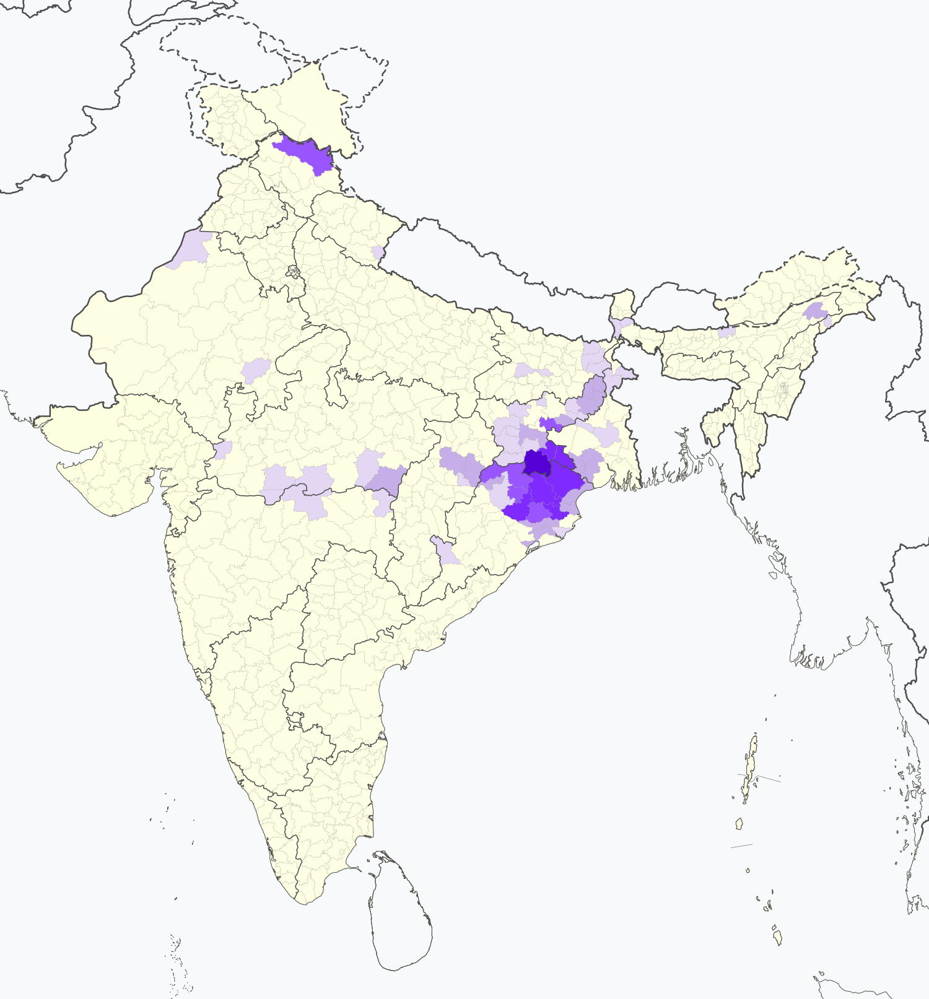
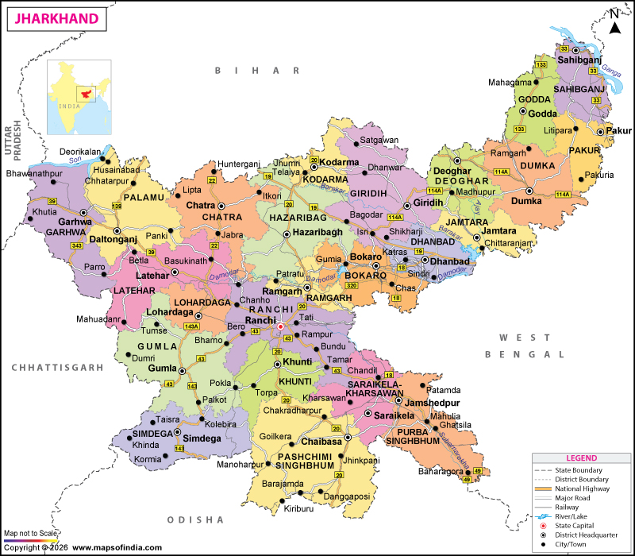
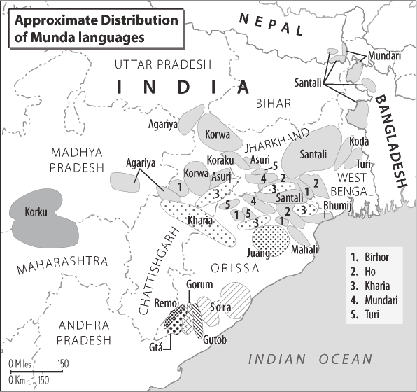

The Ho community is found in several parts of India, mainly in the states of Jharkhand, Odisha, Bihar, and West Bengal.
A large concentration of the Ho population lives in Chaibasa and its surrounding regions in the state of Jharkhand. This area is traditionally known as “Hodesh” and is considered the cultural center of the Ho community. A cultural research center dedicated to the Ho people has been established in Chaibasa by a foreign researcher.
In the state of Odisha, the Ho tribe mainly resides in the Mayurbhanj district.
In Bihar, the Ho community is found in the Singhbhum region, which lies close to the Jharkhand border.
In West Bengal, the Ho community is present in districts such as West Medinipur, Jhargram, Purulia, Bankura, and Bardhaman.

Map showing the distribution of the Ho community across Jharkhand, Odisha, Bihar, and West Bengal.

